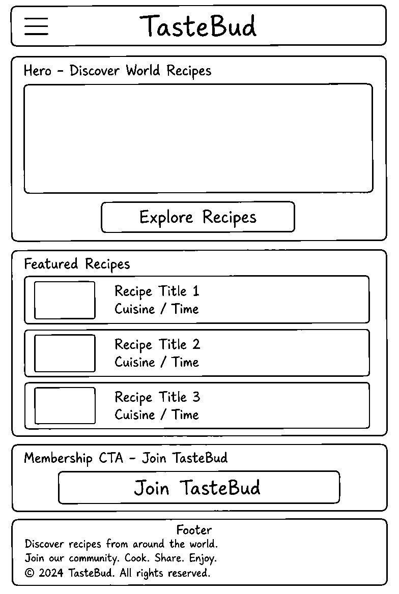
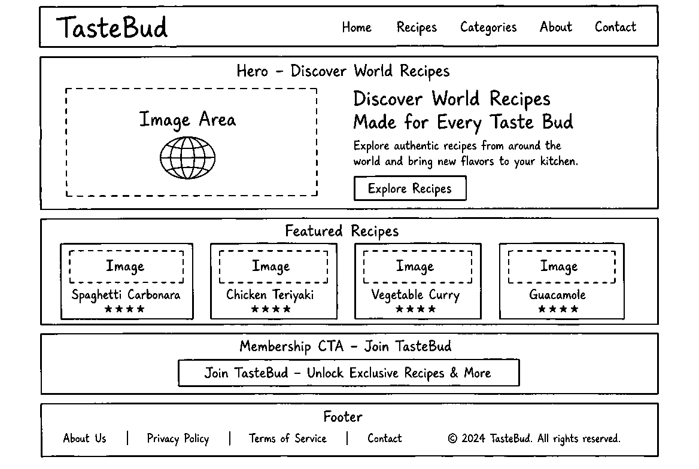

Aa — Inter 700
Aa — Inter 600
The quick brown fox jumps over the lazy dog. — Inter 400
WDD 231 Individual Project · Prosper
TasteBud
The name is short, memorable, and instantly evokes taste, flavor, and the pleasure of discovering food. It pairs cleanly with a logo and signals the site's focus on world recipes at a glance.
Optional domain idea: tastebud-recipes.com
TasteBud is a recipe-discovery hub offering a curated collection of 18 world-class recipes. Visitors can browse featured recipes on the home page, filter recipes by category and cuisine, search by keyword, open a detail view with ingredients, steps, cook time and servings, and save favorites to revisit later. A membership form lets users join for exclusive recipes, meal plans, and community features.
Questions the target audience is likely to bring to the site:
The palette is built around a warm, kitchen-friendly terracotta on a cream background, with near-black for strong text and warm gray for secondary copy.
This site plan page applies the same palette: cream page background, near-black text, white surface panels, terracotta heading underlines and links, and warm-gray muted notes.
TasteBud uses a single typeface: Inter, loaded from Google Fonts. Headings use weights 600 and 700; body text uses weight 400. Inter was chosen for its clean, modern, highly legible feel — it works equally well in card titles, recipe lists, and long-form copy.
Aa — Inter 700
Aa — Inter 600
The quick brown fox jumps over the lazy dog. — Inter 400
Hand-drawn wireframes for the TasteBud home page, showing layout at two breakpoints.


This document has been written to pass the W3C HTML and CSS
validators with zero errors. It uses a single h1
followed by logical h2 section headings, every
img has descriptive alt text, and the color
combinations (near-black on cream, white-on-terracotta buttons,
warm gray for muted notes) meet WCAG AA contrast. The page title
above — "TasteBud — Site Plan | WDD 231" — identifies
both the site and the assignment.